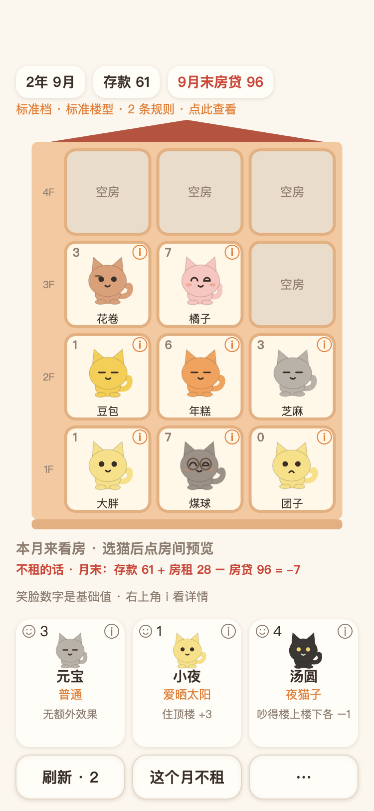
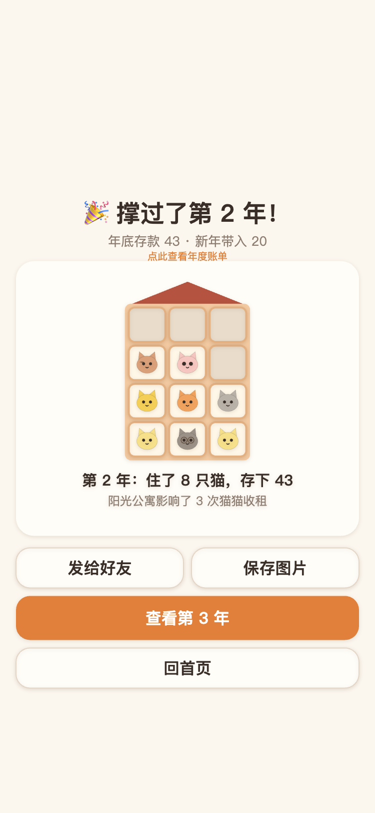
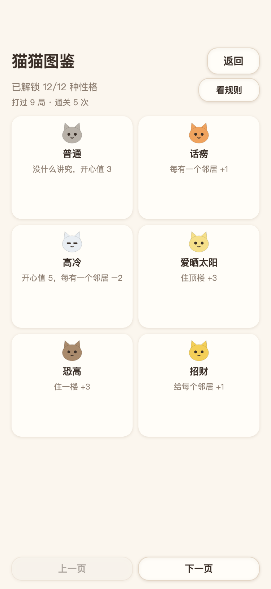

猫咪公寓题材 · 微信小游戏
喵邻居
一栋老公寓，
等一群新邻居。
你是一栋老公寓的房东，租客全是性格各异的猫。把猫安排进合适的房间，让它们住得开心，按时交上房贷。
这是微信小游戏，需在微信内运行。这里是介绍页。
查看正式码公 寓 日 常
先看看，猫们怎么住
以下为已有真实本地游戏截图：本地版本画面，未核实与线上 2.0.0 一致，实际以微信内为准。






来 访 须 知
进门前的小问题
- 微信里为什么搜不到？
- 截至 2026-11-06，微信名称搜索目前受限；具体原因与恢复时间尚未核实。可尝试上方正式码，能否进入以微信实际提示为准。
- 需要下载 App 吗？能直接在网页玩吗？
- 喵邻居是微信小游戏，需通过微信进入，无需单独下载安装喵邻居 App。本页只提供介绍、游戏画面与正式码。
- 正式码能保证进入吗？
- 这是从喵邻居后台取得的正式码，不是体验码。手机扫码与普通用户进入尚待实测，正式码存在不代表所有账号都能进入。
- 这是谁的介绍页？
- 这是喵邻居项目维护者发布的独立介绍页。核对账号请认准 AppID：
wx99f30143ac9176d0。有问题可在公开反馈区留言，请勿上传个人敏感信息。